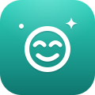
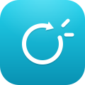
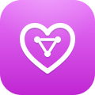
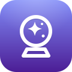

從發現用戶痛點到設計 AI 解決方案，從寫 PRD 到動手寫 Code。能橋接技術與商業，讓 AI 真正落地產生價值。 Biomedical engineering foundation + GCP certification. I turn clinical problems into AI products — from user discovery to deployed MVP, often solo, often in days.
生醫工程背景，具備 AI 產品運營與數據驅動決策思維。從教育科技到心理健康，從 B2B SaaS 到 AI 原生應用，用產品解決真實問題。 Biomedical engineering foundation, with GCP certification (ICH E6(R2)). I combine clinical and lab methodology with product discovery to identify real problems, define requirements, and deliver working AI solutions.
我認為好的 AI PM 不只是「提需求的人」，而是要能深入理解技術邊界、設計可行的 AI 交互流程、並用數據驗證假設。A great AI PM isn't just someone who files requirements. They understand technical constraints, design usable AI interactions, and validate assumptions with data.
在炫圖 AI 實習期間，我定義北美市場短視頻內容策略，分析 TikTok/Instagram/YouTube 用戶行為模式，建立可量化的每日內容決策框架。During my internship at Xuantu AI, I drove international user acquisition through short-form video, producing ~20 TikToks and Instagram Reels monthly and building tracking systems that grew overseas reach to 5,000+ per week.
自己開發了 23 個 Side Projects，從 Flutter 到 FastAPI 到 Next.js，技術棧橫跨 Mobile、Web、Backend，多數已部署上線。這讓我能和工程師用同一種語言溝通。I've built 23 side projects on my own across Flutter, FastAPI, Next.js, and React, most of them deployed and publicly accessible. That hands-on fluency lets me speak the same language as engineers.
每個專案都是從真實痛點出發，設計產品方案，動手實作，迭代優化。 Every project starts from a real pain point: design the solution, build it, and iterate.

AI 情緒夥伴。三階段對話設計（情感驗證→認知重構→行動建議），支援 OpenAI/Moonshot/自訂 API，離線情緒檢測引擎。An AI emotional companion. Three-stage chat design (validation → cognitive reframing → actionable advice). Supports OpenAI, Moonshot, and custom APIs, with an offline emotion-detection engine.
把日記變成小說。用戶寫日記 → Gemini AI 生成連貫小說，可選風格（愛情/懸疑/療癒）和角色。Flutter + FastAPI + React 三端架構。Turns journal entries into novels. Users write diary posts → Gemini AI generates a coherent story with selectable genres (romance / mystery / healing) and characters. Flutter + FastAPI + React architecture.
AI 任務斷捨離。Brain Dump 模糊目標 → AI 生成澄清問題 → 結構化任務輸出。React Native + Next.js API。AI-powered task decluttering. Brain-dump vague goals → AI asks clarifying questions → outputs structured tasks. React Native + Next.js API.
貼上對話截圖 → AI 計算「敷衍指數」、識別紅旗行為、找出逃避模式、給出可操作建議。Gemini JSON mode 確保輸出結構。Paste a chat screenshot → AI calculates a "blow-off score," flags red flags, spots avoidance patterns, and gives actionable advice. Gemini JSON mode guarantees structured output.
設定角色與場景，Gemini 實時生成互動式推理劇情。每段提供多選支線讓玩家主導敘事，水墨風開場動畫，PWA 可加入主畫面。玩家自帶 API key（前端零金鑰外洩）。Set characters and scenes; Gemini generates interactive mystery plots in real time. Each segment offers branching choices so players drive the story. Ink-wash intro animation, PWA installable, and BYO API key for zero frontend key exposure.
幫一群人找出最公平的「目的地」。等時圈 × 相聚的設計理念，結果只到行政區層級、不洩漏個人出發位置（隱私優先）。後端 proxy 加 CORS 白名單與配額保護，前端零金鑰。Finds the fairest destination for a group. Built on isochrones × meetup design philosophy; results stop at district level to protect starting locations (privacy-first). Backend proxy with CORS allowlist and quota protection; no keys exposed on the frontend.
記錄每道菜在每間店的愛與恨，下次不再踩雷。Google Maps 探索附近餐廳、隨機選餐、Firebase 帳號登入後各自雲端同步（每人資料隔離）。Track what you loved or hated at every restaurant so you never order wrong again. Explore nearby spots on Google Maps, get a random pick, and sync per-user data to the cloud after Firebase login (data isolation enforced).
每天一劑好內容：名言、冷知識、笑話與靈感隨機發放，一鍵刷新。輕量單頁應用，開站即用。A daily dose of good content: quotes, trivia, jokes, and inspiration served at random with one-tap refresh. A lightweight single-page app, ready the moment it loads.
B2B 教育 SaaS。學生用 LINE 回報成績 → 老師在 Web Dashboard 看成績折線圖 → 機構管理者看全盤數據。FastAPI + Chart.js + LINE Bot。B2B EdTech SaaS. Students report scores via LINE → teachers view trend charts on a web dashboard → admins see the full picture. FastAPI + Chart.js + LINE Bot.
把記帳變成 RPG。三層預算池 HP 視覺化、人格系統（好友/導師/宿敵）、Gemini AI 即時戰場評論、成就與裝備系統。羅馬大理石風格＋多人雲端同步。Turns budgeting into an RPG. Three-tier budget HP visualization, personality system (friend / mentor / rival), live Gemini AI battle commentary, plus achievements and gear. Roman marble aesthetic with multiplayer cloud sync.
B-Battle 的 Flutter 跨平台版本。意志力系統、冷靜模式、願望清單、AI 隊友對話。和 React 版資料互通。The cross-platform Flutter version of B-Battle. Willpower system, cooldown mode, wishlist, and AI teammate chat. Data syncs with the React version.

微習慣挑戰。每天抽一個「身體覺察」小任務，用 2 分鐘打破無意識的行為循環。「呼吸」設計理念：暖奶油＋鼠尾草的平靜介面，去除催促感的 gamification。Micro-habit challenges. Draw one daily "body-awareness" mini-task and spend two minutes breaking unconscious behavior loops. "Breathe" design philosophy: warm cream + sage palette for a calm, non-urgent gamification experience.
上班摸魚不被發現的 PWA 工具箱。AI 加密聊天（6 主題）、變臉 UI（Excel/Outlook/Terminal 偽裝）、下班結界、假通知。A PWA toolkit for discreet office downtime. AI encrypted chat with 6 themes, disguise UI (Excel / Outlook / Terminal), end-of-day boundary, and fake notifications.
自動化生活助手。Gmail 消費通知自動解析記帳、Google Sheets 預算自動更新、Telegram 週報推送。A personal automation assistant. Parses Gmail purchase receipts for bookkeeping, auto-updates a Google Sheets budget, and pushes weekly Telegram reports.
截圖轉筆記、回憶狀態管理、旅程自動歸檔。整合 Tesseract OCR 與 Gemini AI，把散落的截圖變成可搜尋的結構化筆記。Screenshot-to-notes, memory-status tracking, and journey auto-archiving. Integrates Tesseract OCR and Gemini AI to turn scattered screenshots into searchable, structured notes.

多人物 AI 人際助手 CRM。記錄重要關係的細節、截圖興趣、送禮建議，讓 AI 幫你記住每個人在乎的事。A multi-person AI relationship CRM. Tracks details, screenshot interests, and gift suggestions for important relationships — letting AI help you remember what matters to each person.

五系統命理平台（八字、西洋、紫微、人類設計、星宿）。已上線並有真實用戶使用，後端使用 Python + Flask + 天文星曆計算。A five-system astrology platform (Bazi, Western, Ziwei, Human Design, Star Signs). Live with real users; backend built with Python + Flask + astronomical ephemeris calculations.
把旅途回憶變成可匯出的精美日誌。記錄行程、照片、地圖軌跡，一鍵輸出 PDF 分享或列印成實體回憶。Turns travel memories into exportable, beautifully formatted journals. Log itineraries, photos, and map tracks, then export to PDF for sharing or printing.
極限旅遊最佳化工具。輸入想去的景點，用 TSP 演算法找出最短路線，在 Leaflet 地圖上視覺化呈現。Extreme travel optimizer. Enter attractions and a TSP algorithm finds the shortest route, visualized on a Leaflet map with numbered markers and dashed paths.
正在尋找產品相關職缺，歡迎聯繫。 I'm open to AI Product Manager roles — let's connect.